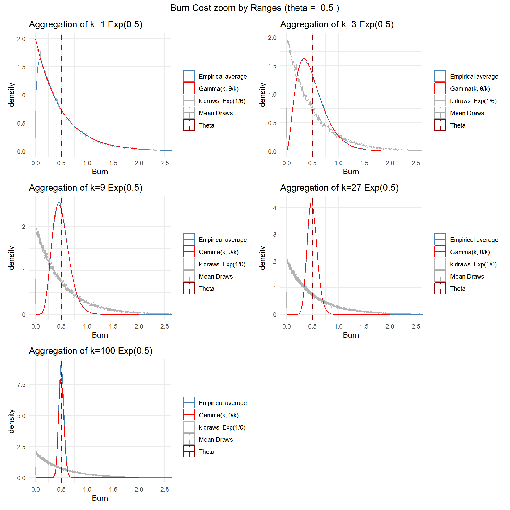
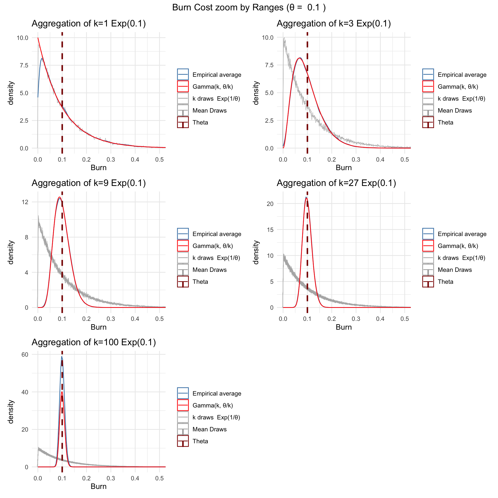
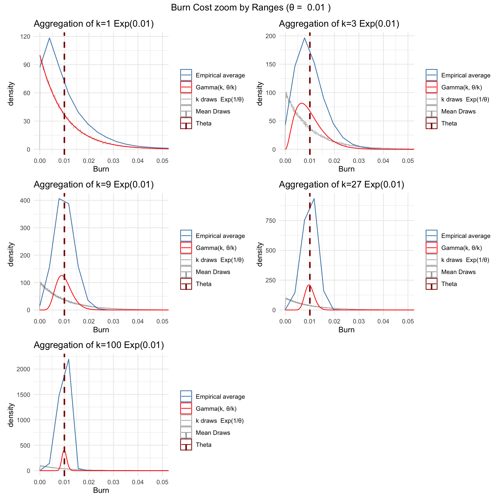
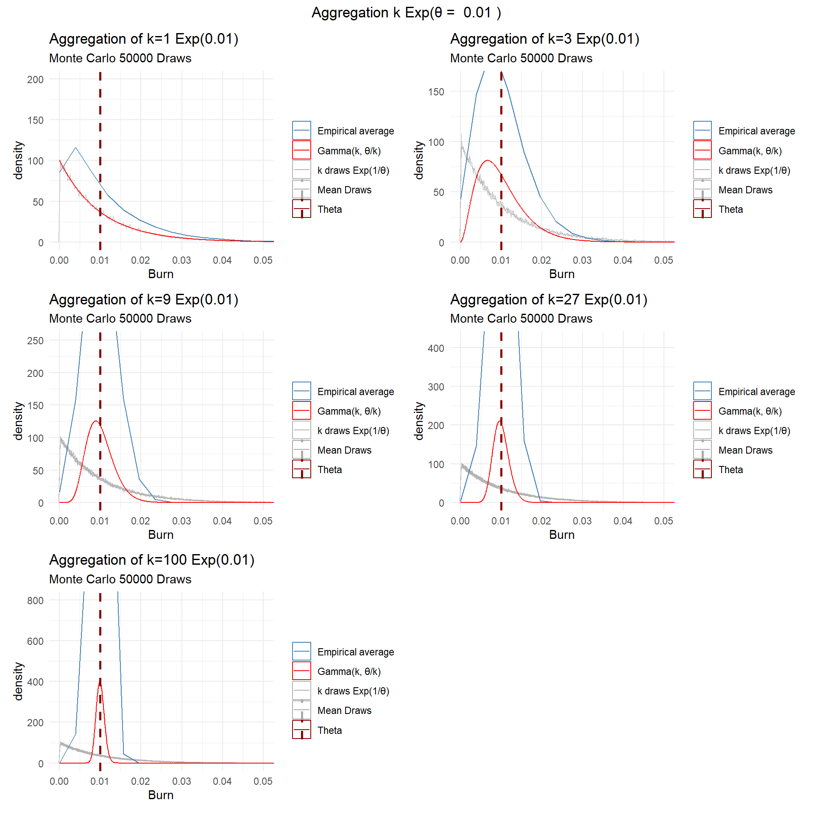

Aggretation Effect on Gammas
Exponentials, Erlanf
None of the models is performs fully satisfactory for our use. The main issues are overfittig to the known stations and extremly large individual errors. Furthermore, some locations and models are fully biased and there is no clear explanatory patters (geography etc.). Models which perform better on precision tend to be less generalizable, further underpinning the overfitting argument.
Conclusion: we need to learn to work with partially unreliable data.
Problem Setting
We define that each field is a atomic damage unit, which is governed by a probabilistic function P with some parameter θ. In our data, we do not see any of the k fields, we only see the aggregated effects of k fields. Also, we do not know the parameter k (how many fields).
We assume that the damage in a given field follows an exponential function with parameter lambda = 1/θ. Exponential tells that damages near zero are most likely and get increasingly unlikely the larger x.
Our first goal is to understand the effects of aggregation on such a situaiton. Therefore, we start with a simple experiment.
Theory
An Exponential Exp(1/θ) is a special case of a Gamma(1, θ). In fact, the entire justification of Erlang, which is a special case of Gamma with alpha = int, is the aggregation (sum, mean) of k Exp(1/θ). Hence, we can say that averaging k Exp(1/θ) ⇒ Gamma(k, θ/k). If we hypthesize that the atomic unit of damage does not follow Exp(1/θ), but Gamma(alpha,θ) with some shape parameter alpha, then little changes. k Gamma(alpha,θ) ⇒ Gamma(alpha*k, θ/k).
Simulations
We run monte carlo simulations of 50’000 draws of Exp(1/θ). With 50’000 draws we are very close to the theory. We compare the empirical average to the Theoretical Gamma(k, θ/k) (Erlang), which should be the theoretical aggregated distribution. We compare then the theoretical distribution to the empirical average and the Expected value of all Exp(1/θ) to θ.
We do it for 3 different θ
θ = 0.5
θ = 0.1

θ = 0.01

Why does empirical average diverge at small theta

Expected Values and Shapes
There is one very interesting mechanism to be understood. When Averaging k Gamma(α, θ) (or Exp(1/θ)), then by linearity of Expectation, E[X] of the k aggregated Gammas Gamma(αk, θ/k) remains the same as E[X] of 1 Gamma(α, θ). Obvious as k cancels out. However, the speciality of Gamma is that the shape parameter changes.
That’s why the Gamma example is interesting: it visibly illustrates how aggregation alters shape while preserving the mean.
The Gamma distribution in plain language What is it? A flexible curve for positive quantities (0 to ∞) that can look like a steep exponential, a gentle hump, or almost a bell—depending on two knobs. The two knobs • Shape (k) = how many “little pieces” add up. • Scale (θ) = average size of each piece. Mean = k θ, Variance = k θ². Everyday analogy Imagine a project that needs k independent mini-tasks, each taking a random time that averages θ days. Total duration = sum of those mini-tasks → that total is Gamma-shaped. Special cases • k = 1 ⇒ Exponential (memory-less waiting-time). • k = ½, θ = 2 ⇒ χ²(1). Large k ⇒ looks Normal (central-limit effect). Natural phenomena it matches – Total rainfall from many showers – Aggregate earthquake energy – Time until k failures in a machine – Insurance claim severity (right-skewed, non-negative) – Queueing/telecom traffic bursts Why actuaries & engineers like it
✅ Always non-negative ✅ Closed-form mean/variance ✅ Simple additive property: if scale is equal, sums stay Gamma (handy for aggregation). Visual cheat-sheet • k < 1 → spike near zero, heavy right tail (almost Exponential). • k ≈ 2–4 → single hump, moderate skew (looks like your burn-rate interior). • k ≫ 10 → nearly symmetric, nudging toward Normal. When to reach for it 1. Data are positive and skewed right. 2. Variability seems proportional to the square of the mean (variance grows with mean²). 3. You model a sum of identical Exponentials (waiting for the k-th event).
Only the positive gammas
Only the zero gammas
Only the 5050 mix gammas
Only the 20 80 mix gammas
#| warning: false
#| eval: true
#| echo: false
#| message: false
# set.seed(123)
# k <- 10 # components per observation
# n_zero <- 8 # how many “small” Gammas
# m <- 5000 # sample size
# # small-Gamma params
# shape0 <- 0.6
# scale0 <- 0.05
# # positive-Gamma params
# shape1 <- 3
# scale1 <- 0.4
#
#
# sim <- sim_mix(k, n_zero, m, shape0, scale0, shape1, scale1)
# par_mm <- mom_gamma(n_zero, k, shape0, scale0, shape1, scale1)
# par_mle <- fit_gamma_mle(sim$mix)
# ks_mm <- ks.test(sim$mix, "pgamma", shape = par_mm["shape"], scale = par_mm["scale"])
# ks_mle <- ks.test(sim$mix, "pgamma", shape = par_mle["shape"], scale = par_mle["scale"])
#
# cat("KS p-value (moment-match) :", ks_mm$p.value, "\n")
# cat("KS p-value (MLE fit) :", ks_mle$p.value, "\n\n")
# p <- plot_gammas(sim, par_mm, par_mle, ks_mm, ks_mle)
# p